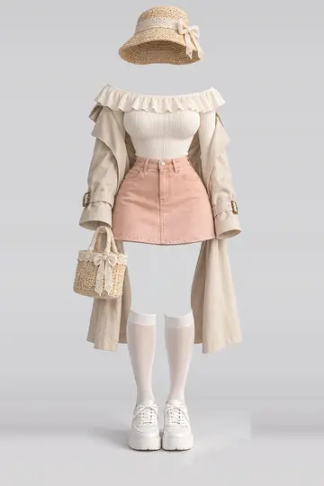
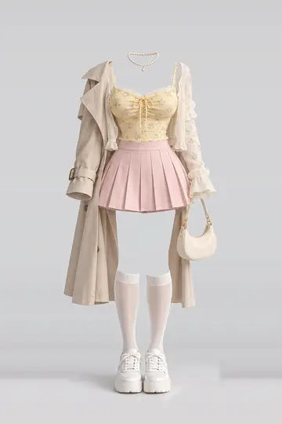
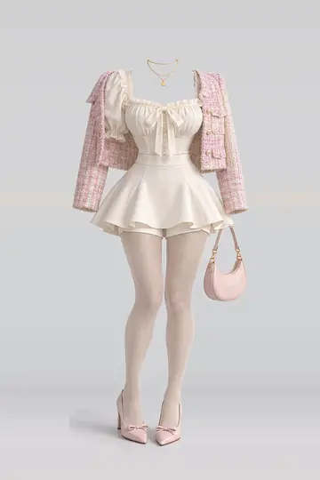
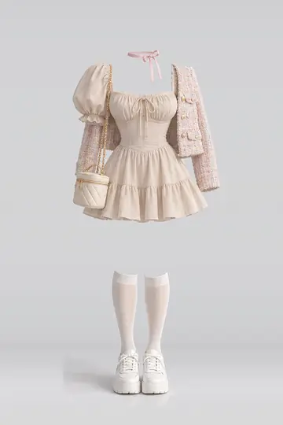
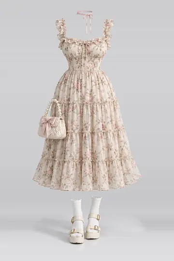
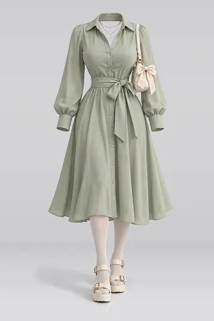
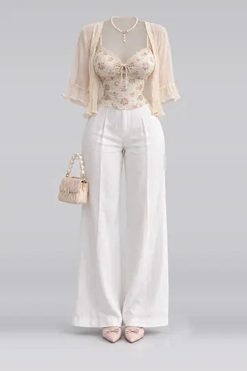
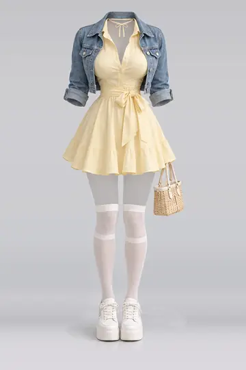
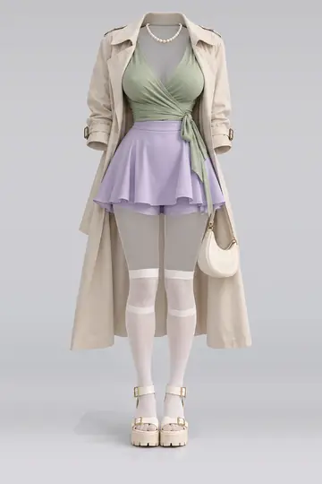
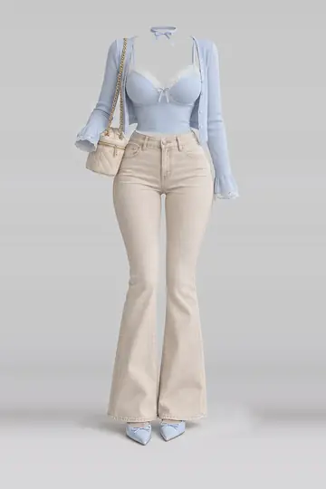

AI 服装参考库中文版
从四季日常到特别场合，浏览无人物的服装搭配参考。
下载原图，带入你的 AI 绘画、人物设定与漫剧创作。
服装参考档案
1,407 套服装
全部服装
正在加载数据…

春装 · SPR-0001
象牙白、荷叶边、针织

春装 · SPR-0002
黄色、碎花、吊带背心

春装 · SPR-0003
奶油色、女式衬衫、缎带

春装 · SPR-0004
米色、迷你、连衣裙

春装 · SPR-0005
米色、碎花、中长款
春装 · SPR-0006
米色、针织、连衣裙
春装 · SPR-0007
蓝色、缎带、雪纺

春装 · SPR-0008
绿色、缎带、衬衫

春装 · SPR-0009
米色、碎花、吊带背心

春装 · SPR-0010
黄色、缎带、衬衫

春装 · SPR-0011
绿色、迷你、半身裙

春装 · SPR-0013
蓝色、蕾丝、吊带背心
没有找到匹配的服装。试试更短的关键词，或重置筛选。
服装库：收录内容与使用方法
AI 服装参考库中文版（AI 服装库、衣装参考库）收录 1,407 套服装，用于无人物衣装搭配、角色服装设计与漫剧造型参考。春装、夏装、秋装、冬装、内衣、派对、泳装、性感，共 8 个分类。
服装图片保存在仓库；在线预览由 GitHub Pages 提供，PNG 原图由 GitHub 仓库提供。
中文创作场景：为 AI 绘画、漫剧和短剧选取角色服装，建立角色定妆参考；用春装、外套等中文关键词查找，再结合脸型库与姿势库制作分镜。
索引快照： · 中文整理：Deeyu · 中文 JSON 索引 · 纯文本介绍
常见问题
服装库适合用来做什么？
用于查找不含人物的服装搭配，为角色设定、AI 绘画和漫剧造型提供参考；脸、体型和背景需要另行指定。
服装数量和图片文件数有什么区别？
每套服装有缩略图、预览图、PNG 原图三个版本，三份文件对应同一套服装，不能按图片文件数计算不同服装。
可以直接将标签当成生成提示词吗？
标签来自原站元数据的中文翻译，用于检索，可能不完整；请结合图片和创作需求补充提示词。
做漫剧角色定妆，服装库和脸型库怎么配合？
先选单套衣装 PNG，再选脸型库的虚构人物参考，在支持多图参考的工具中分别说明衣装和五官要求；保存确认后的定妆图，供后续分镜复用。
其他图库：AI 脸型库中文版 · AI 姿势库中文版 · AI 深度图库中文版
四库联合使用：角色定妆与分镜
先用姿势线稿说明动作、服装图说明穿搭，再加入脸部参考明确人物外观；需要空间参照时选择同编号同视角的深度图。按工具实际支持的参考功能分步使用，并检查人物一致性与遮挡关系。